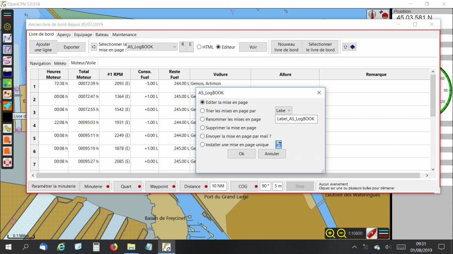

Logbook
Links
-
Source: Github Repository - Delatbabel
-
Releases: Github Releases
-
Download: Website Download
-
Forum: LogbookKonni CF Thread
1. What and Why
The Logbook plugin is useful for creating and maintaining many types of logs for your boat.
The plugin is now maintained by Del, Konnibe has been unable to continue development due to ill health.
2. Install
See install_and_enable page for installing this plugin.
3. Standard actions
An additional Layouts zip file is needed for the first install and should be downloaded through the official download page.
After downloading and installing the plugin, you can install the initial layouts.
-
Start OpenCPN
-
Select Options from the toolbar

and go to the Plugins tab. * Select the Logbook plugin * Click the Preferences button * In the dialog click “Install” below the label “Install Layouts” * In the file dialog select the file 'LogbookKonni_Layouts.zip'
Note that the layouts are customisable by the user and can be distributed to and shared with other OpenCPN logbook users. If you have developed a useful custom layout for your logbook then please feel free to send us details.
The logbook plugin contains an extensive help file which can be accessed by clicking on the little blue book when the logbook plugin is started. See RED circle in below picture.

4. Options
Setting preferences for the logbook is done in the Logbook Preferences dialog. You can get to this from the main OpenCPN Options
window, go to the Plugins tab, select the Logbook plugin and click “Preferences”
5. Use with GE2KAP
On GE2KAP website, select “Downloads” in the Menubar.
C2GPXKML - V4.0.2 New July. 31, 2015 Converts GPX, KML, SRW, Maxsea and Ozi formats. Supports Konni logbook plugin csv to combine track and logbook data.
Preference Pages
Here are the preference pages for Logbook. In the Help file (see above) all the fields are explained in detail.


==== 6. Editing the LogBook
An illustration worth a thousand words, follow these screenshots.
1. The elevator that allows you to choose the model that you want to modify / improve :

+ *2. The window that allows you to launch the editor* (LibreOffice or other), after clicking on *E* (editor), just click OK and if the path is correct (put the path in the logbook settings), LibreOffice or other opens automatically :

+ *3. The model that can be modified at will* (the labels start with *L*, as a label) and then save. + Note the hooks and braces that must not be removed. + Also note that by clicking on “View” in the Logbook, it is possible to continue to appreciate the changes made, after having saved the changes.

The manipulation is exactly the same for an edition in HTML (which can
be saved in PDF) but a little more complex because it requires the use
of a free soft specific KompoZer.exe.
Note that the path to Kompozer must also be indicated in the LogBook
Settings/preferences (last line).
Note also that for LibreOffice, Swriter.exe should be specified and not
writer.exe…

On youtube, you will find a brief tutorial that explains the first steps with KompoZer.exe (and the link to download this soft) : https://www.youtube.com/watch?v=iQEj9N-6Alg
As an example of what you can print: two screenshots, in ODT and in HTML …
in ODT :

and in HTML

==== Download Manual in PDF or Doc
For those who would like the Logbook Manual in a separate format from the plugin, here are two downloads: